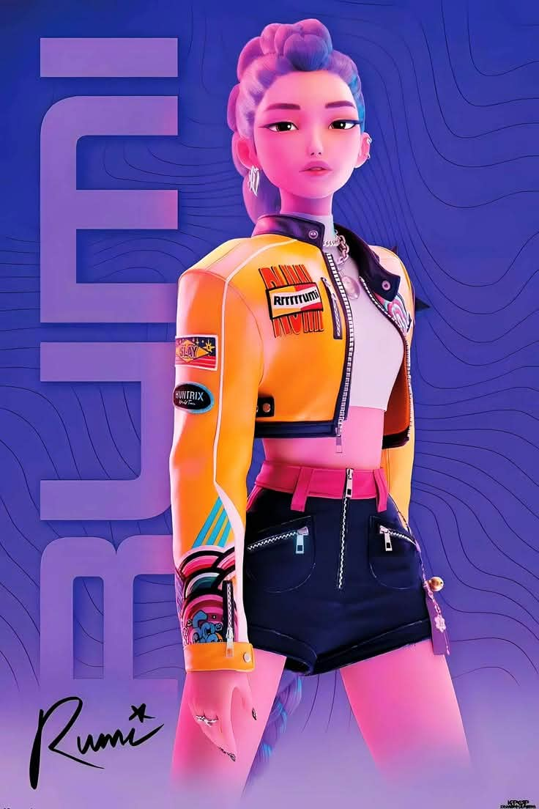
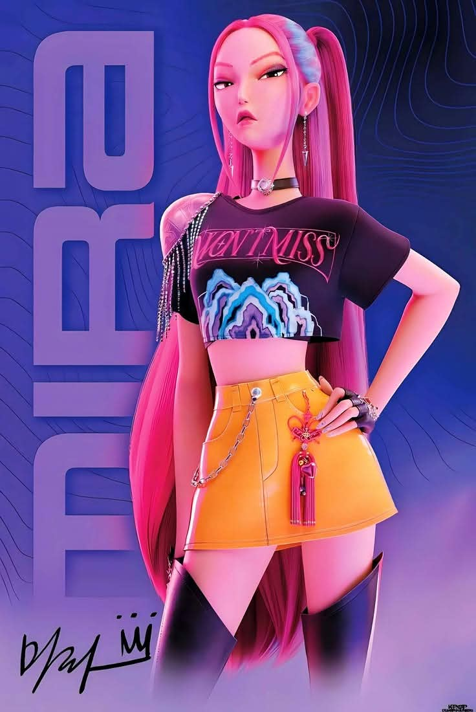
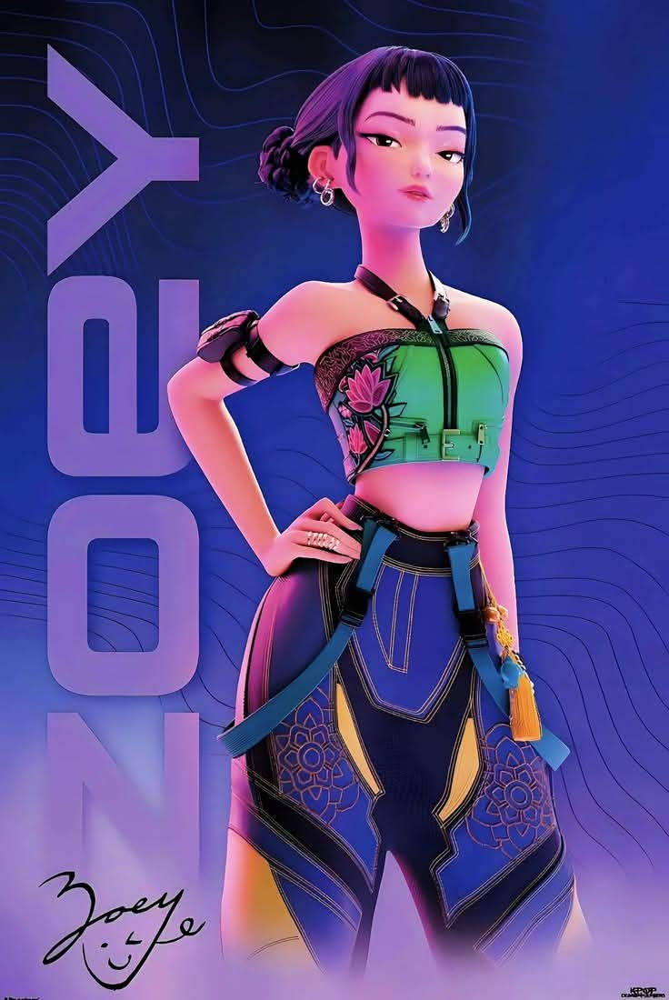
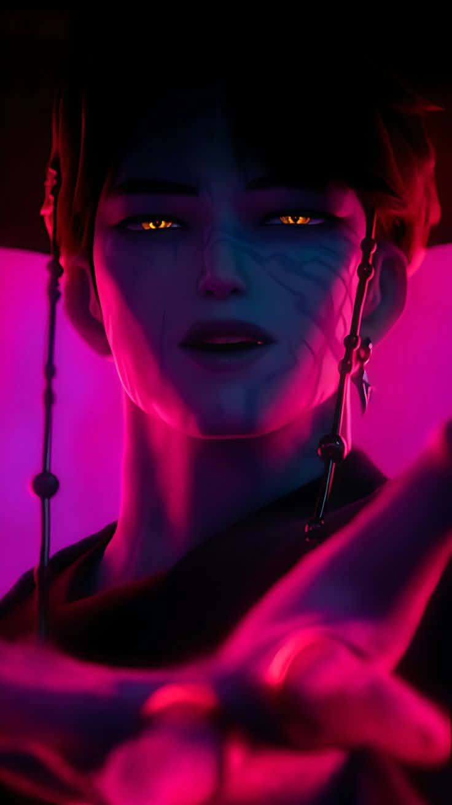

Characters

Rumi
Lead singer of HUNTR/X · Voice: Arden Cho (singing: EJAE)
Rumi is the leader of HUNTR/X and a powerful demon hunter. She hides a secret that she fears will break the group apart. Her voice is the heart of the band's biggest songs. She learns that being herself is her real strength.

Mira
Dancer of HUNTR/X · Voice: May Hong (singing: Audrey Nuna)
Mira is the sharp, cool dancer of the group. She is serious about training and protects her teammates fiercely. Her sword skills match her stage moves. Under the tough look she is a loyal friend.

Zoey
Rapper of HUNTR/X · Voice: Ji-young Yoo (singing: Rei Ami)
Zoey is the youngest, funniest member and the group's lyricist. She keeps the team laughing even in a fight. Her quick mind helps her plan every move. She believes music can heal people.

Jinu
Lead of the Saja Boys · Voice: Ahn Hyo-seop
Jinu is the charming leader of the demon boy band. He wins fans with his music while serving a darker master. His past is full of regret. He becomes the hardest rival Rumi has to face.